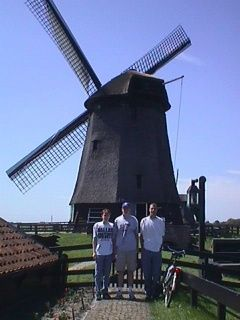
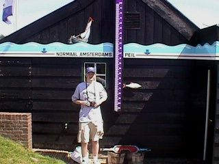
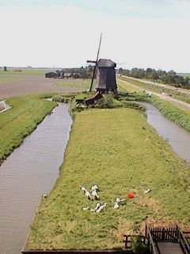
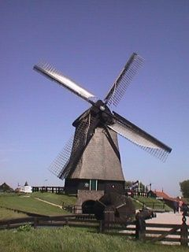

All of these pictures were taken at our visit to Schermerland. Schermerland is a location where many windmills were originally used to pump water out of the ocean and into canals that carried the water away so the land could be used for farming. As you will see, much of the Netherlands is below sea-level and there are few hills.
A non-working windmill with ponies in front of it.
From left to right: Keith, Joe, and me. We are standing in front of a working windmill that we are about to go into.
Joe standing just below sea-level.
I took this picture of a windmill while looking out the top of another windmill.
This windmill is still running today. It is the windmill I was in when I took the previous picture. Even though this windmill works, it doesn't pump water out of the ocean anymore. All it does is pump water out of a small stream and then back into the exact same stream. The top part of the windmill was made to rotate so water could always be pumped no matter which way the wind was blowing. If you look close, you'll see that the windmill is blocking the door. To avoid injury, the clever engineers put doors on the other side of the windmill. You wouldn't think they cared so much about being injured by looking at the inside however. There are many huge moving gears that any tourist could get caught and maimed in. I don't remember seeing any warnings either. In America this would be a lawsuit waiting to happen, but during my vacation I realized Europeans are different from Americans in this respect.